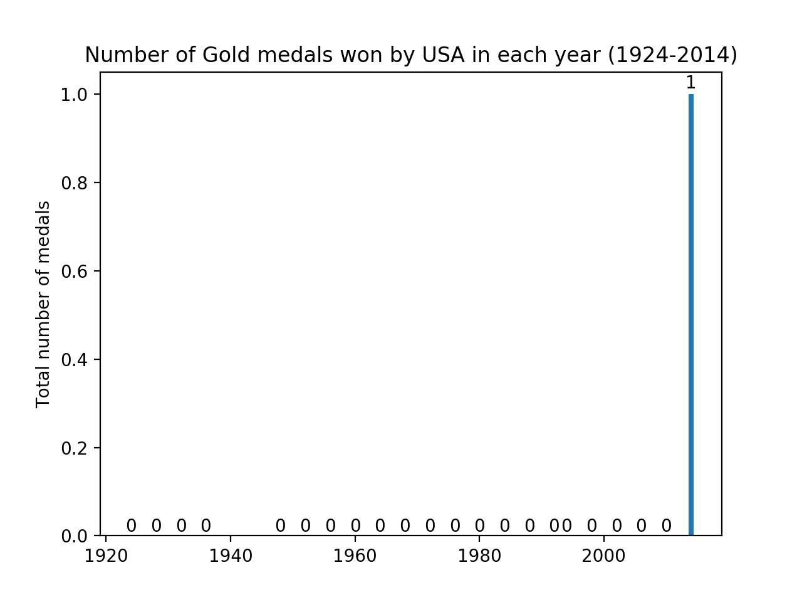

My awesome Olympic data Viz Project

I am showing the chart of USA country. This bar chart is showing the total number of medals won in each year from 1924 to 2014 by USA. In the above bar chart USA doesn't won any medal from 1924 to 2013 but in 2014 USA won 1.0 medals.

This is the second chart of the total number of medals won by the USA. In this bar chart I am showing the total number medals won by the USA in each year from 1924 till 2014.USA won 38 medals in 1921 but in 1940 USA doesn't won any medals. From around 1950 USA won 46 medals and it raised year by year and reached at 206 medals at the end of the time period. So, in this chart USA won the least medals in the starting time period and won the most of medals in the last years.
This is the third chart of the visualization of USA country which is represents the total number of Gold medals won by Men in each year from 1924 till 2014.In the starting of the time period the total number of medals was 0 and it was not change at the end of the time period it was be stable in the each year.
This is the fourth chart of the visualization of USA country which is represents the total number of Gold medals won by Women in each year from 1924 till 2014.In the starting of the time period the total number of medals was 0.0 and it was remain stable till around 2013 and at the end of the time period they won 1.0 medals.
This is the fifth chart of the visualization of USA country which is represents the total percentage of Gold, Bronze medals won by USA in each year from 1924 till 2014. The 74.4% of gold medals from the total percentage of the medals. And 25.6% of the bronze medals from the total percentage of the medals.
This is the fifth chart of the visualization of USA country which is represents the total percentage of Bronze medals won by USA in each year from 1924 till 2014. The 51.1% of bronze medals from the total percentage of the medals. And 48.9% of the silver medals from the total percentage of the medals.